- software de sistema
- software de aplicação
- software de programação
- software de segurança
- software de bases de dados
- software de redes
- software de educacional
- software de entretenimento
- software de gestão empresariao
- software de design assistido por computador (CAD)
O que é um software?
Software é um conjunto de instruções que devem ser seguidas e executadas por um mecanismo, seja ele um computador ou um aparato eletromecânico. É o termo usado para descrever programas, apps, scripts, macros e instruções de código embarcado diretamente (firmware), de modo a ditar o que uma máquina deve fazer.
software de sistema
São os programas encarregados de fazer a comunicação entre o computador, que só entende linguagem de máquina, e o usuário, sendo a base em que outros softwares, como os de aplicação e os de programação irão rodar. Ou seja, são plataformas para fazer funcionar outros softwares.
Windows, macOS, Linux, iOS
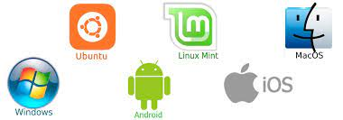o que é software de aplicação?
O tipo mais conhecido, os softwares de aplicação são os famosos programas, que são utilizados para realizar tarefas do cotidiano como ouvir música, vídeos, criar e editar planilhas e arquivos.
Microsoft Word, Spotify, Calculadora, Instagram, TikTok.
o que é software programação?
são softwares usados para criar outros programas, a parir de uma linguagem de programação, como Java, PHP, Pascal, C+, C++, entre outras.
Word, Exel, Paint, Bloco de notas, calculadora.
o que é software de segurança?
Trata-se de uma classe de sistemas que age na identificação, na prevenção e no bloqueio de possíveis invasões, a partir dos códigos maliciosos.
Antiphishing, Antispyware, Antirransomware, Firewall, Gerenciador de senhas,VPN (Rede Privada Virtual), Controle dos pais
o que é software de base de dados?
O software de banco de dados às vezes também é conhecido como "sistema de gerenciamento de banco de dados" (DBMS). O software de banco de dados simplifica o gerenciamento de dados, permitindo que os usuários armazenem dados em um formulário estruturado e depois os acessem.
Para ajudar você a conhecer os principais, vamos apresentar os 5 sistemas de gerenciamento. Oracle Database. O Oracle Database – ou Oracle DB – é um sistema de gerenciamento de banco de dados relacional da Oracle. ... SQL Server. ... MySQL. ... PostgreSQL. ... Firebird DB.
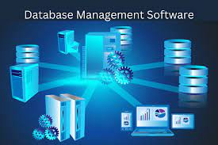o que é software de redes?
é um termo extremamente amplo para uma gama de softwares voltados ao design e implementação de redes modernas.
Gerenciamento remoto via navegador web, PocketPC, ou Windows client Notificações sobre tempos de interrupção por email, ICQ, pager/SMS, e muito mais Seleção abrangente do tipo de sensor Monitoramento de múltiplas locações.
o que é software de educacional?
O software educacional é uma solução completa para instituições de ensino de todos os portes e segmentos.
O software educacional é uma solução completa para instituições de ensino de todos os portes e segmentos.
o que é software de entretenimento?
O software de entretenimento inclui videogames, vídeos e qualquer outro software que o usuário considere agradável.
The Sims; Candy Crush; League of Legends.
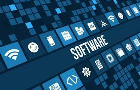o que é software de gestão empresarial?
é um sistema informatizado composto de diversos módulos relacionados aos processos operacionais, administrativos e gerenciais de uma organização, que integra de forma inteligente e centralizada os dados referentes a todas as operações diárias de uma empresa.
Asaas. ... Agendor. ... Pipedrive. ... Trello. ... Tiny. ...
o que é software de design assistido por computador?
permite que os usuários criem desenhos 2D digitais e modelos 3D. A criação desses modelos permite que os usuários interajam e otimizem os projetos para atender à intenção do design.
o que é windows?
Windows é uma palavra inglesa que significa “janelas”. Em português, no entanto, o seu uso está exclusivamente associado a um sistema informático desenvolvido pela empresa Microsoft, comercializado desde 1985.
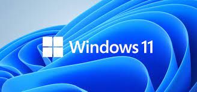windows 11 home
Voltado a usuários domésticos, alunos e gamers, o Windows 11 Home é a versão básica do sistema. Em comparação ao Pro e ao Pro para Estações de Trabalho, o Windows Home não possui 7 dos 23 recursos de segurança do Windows 11.
Windows 11 Pro
O Windows 11 Pro, de acordo com a Microsoft, foi criado pensando nos ambientes híbridos de trabalho, e possui todos os recursos de trabalho que a versão Home não tem, além de superá-la em 2 nos recursos de segurança. O Windows 11 Pro possui, por exemplo, o recurso Área de Trabalho Remota, que permite acessar arquivos, aplicativos e pastas de qualquer lugar usando um dispositivo compatível.
Windows 11 Pro para Estações de Trabalho
O Windows 11 Pro for Business tem foco em "pessoas com cargas de trabalho avançadas", como cientistas de dados, profissionais de CAD, pesquisadores, equipes de produção de mídia, designers gráficos e animadores. Ele possui todos os recursos das outras versões, além de ferramentas adicionais de segurança e trabalho.
Windows Windows 11 SE for Education
Por fim, o Windows 11 SE for Education chega com o objetivo de fornecer "educação, acessibilidade e inclusão". Esta versão possui controle de instalação de aplicativos e ainda permite transmitir apps em tela cheia para projetores de sala de aula.

o que é linux?
Linux não é apenas um sistema operacional (como Windows ou macOS), mas sim um termo popular para toda uma família de sistemas operacionais baseados em um mesmo núcleo de código. Saiba mais sobre o que é Linux, como foi criado e quais são suas distribuições mais famosas.
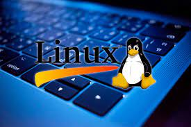Ubuntu
O Ubuntu é sem dúvida nenhuma, a distribuição linux mais usada e também a que maior influencia devido ao fato de ser uma das distribuições mais amigáveis e mais fáceis de instalar, usar e também de ser a distribuição mais fácil de se instalar programas e de se obter ajuda para resolver problemas.
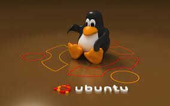Mint
O Linux Mint é uma das distribuições Linux preferidas dos usuários iniciantes no Linux e também é considerada um das distribuições mais fáceis de usar. O Linux Mint está em primeiro lugar de acordo com o ranking do Distrowatch(estar em primeiro no ranking do distrowatch não quer dizer que seja a distribuição mais usada) mas é possível que caia um pouco por causa da perda de credibilidade que a distribuição teve após a invasão do site e a troca das ISO’s da distribuição.
Debian
Debian é uma das distribuições mais estáveis e muitas distribuições linux tem o Debian como base.
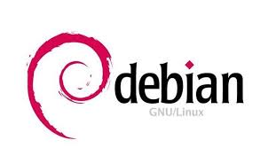Fedora
Apesar de não ser tão fácil de usar quanto as distribuições Ubuntu e Mint, é uma distribuição relativamente fácil de usar mas os iniciantes podem ter um pouco de dificuldade.
OpenSuse
Muito usado em servidores, seu gerenciador de pacotes é o Yast.
Red Hat Enterprise Linux
É uma distribuição Linux comercial voltada para empresas e é muito usada em servidores e em datacenters.
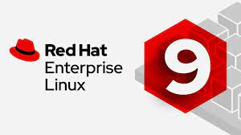CentOS
É construída usando o mesmo código do Red Hat Enterprise Linux mas é gratuita, não possui os logotipos oficiais da Red Hat e também não possui suporte da empresa.
Slackware
Criada em 1993 por Patrick Volkerding, Slackware é a mais antiga distribuição Linux ainda em atividade.
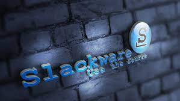Arch Linux
É uma distribuição do tipo rolling release, minimalista e otimizada para processador i686. O seu gerenciador de pacotes é o Pacman.
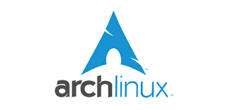Gentoo
O principal diferencial dessa distribuição é o fato de os seus pacotes não serem pré-compilados, todos os pacotes são compilados para o hardware do sistema, obtendo assim maior velocidade do que seria possível em outras distribuições.
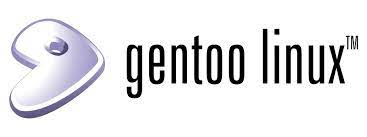Mageia
Ocupando o lugar que seria da Mandriva, Mageia é uma distribuição Linux francesa criada por ex colaboradores da Mandriva que criaram uma Organização sem fins lucrativos após uma série de demissões que ocorreram antes da falência da empresa.
Backtrack / Kali Linux
O Kali é a distribuição mais usada entre as distribuições Linux voltadas para testes de penetração e para analisar a segurança de sistemas e redes de computadores.
O que é hardware?
Hardware é todo componente físico, interno ou externo do seu computador, ou celular, que determina do que um dispositivo é capaz e como você pode usá-lo. Embora dependa de um software para funcionar (e vice-versa), o hardware é um elemento a parte e igualmente importante.
Tipos de hardware interno
Existem dois tipos de hardware interno que diferem de acordo com o grau de importância que tem na estrutura do dispositivo do qual faz parte: Por um lado, existem os componentes essenciais para o funcionamento básico, como a placa-mãe ou a placa de rede.
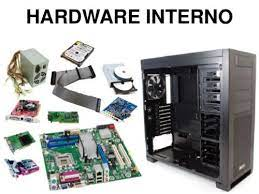Hardware externo
São, em suma, todos os periféricos conectados. Exemplos: impressoras, scanners, monitores, mouses, teclados, webcams, fones de ouvido, microfones, auto-falantes, cabos, unidades de armazenamento externas (HDs, cartões SSD, pendrives), projetores, joysticks etc.
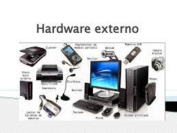Hardware – Entrada
O usuário se comunica com o núcleo do computador (composto por UCP e memória principal) através de dispositivos de entrada e saída (dispositivos de E/S) ou I/O devices (do inglês Input/Output) , também denominados periféricos
Hardware de Saída
Dispositivos de SAÍDA: Funções: exibir ou imprimir os resultados do processamento, ou ainda controlar dispositivos externos.
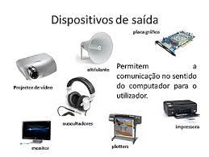